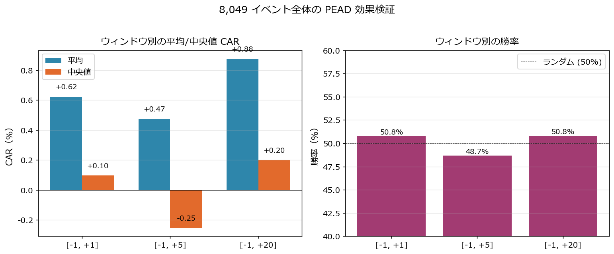
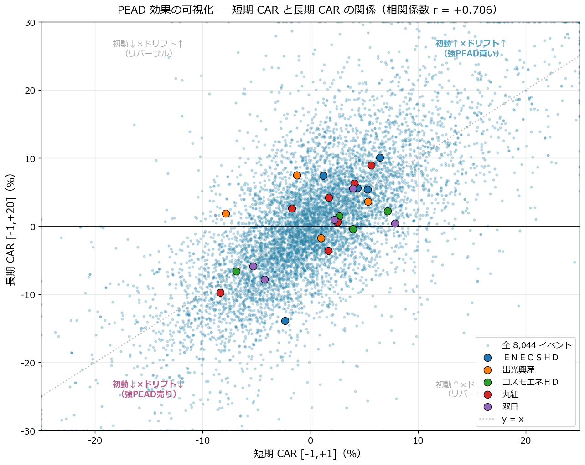
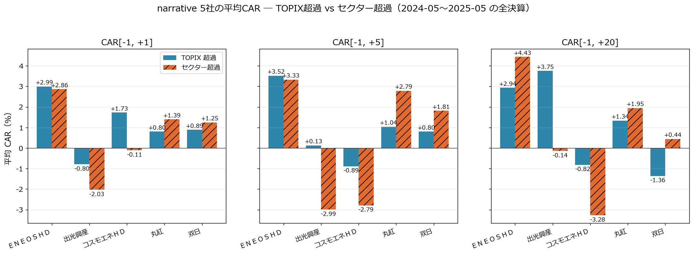
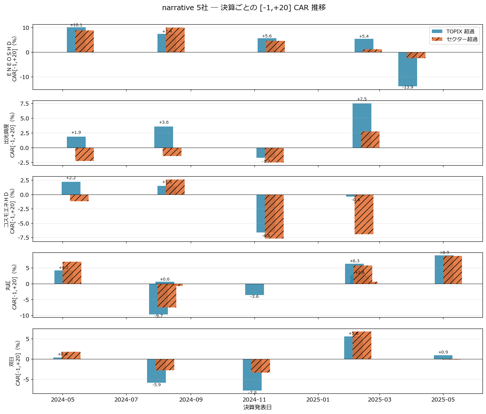

CAR イベントスタディで「決算後ドリフト」を実証する ― 8,049 決算イベント × narrative 5社で PEAD を検証
連載01〜12 ではすべて 決算データの中身 を分析してきました。PEG/ROE、リビジョン、サプライズ、信用、XBRL スキーマ、進捗率、アクルーアル、三角検証、セグメント発進力 ― どれも「良い決算とは何か」を定義する作業でした。
本記事では視点を逆転させて、「決算発表後に市場はどう反応したか」 を株価データで実証します。学術的に PEAD（Post-Earnings-Announcement Drift） と呼ばれる現象 ― 決算発表後にサプライズの方向に株価がドリフトし続けるアノマリー ― を、自前パイプラインで集めた 8,049 決算イベント で測定し、連載01〜12 で評価した銘柄が 実際に市場でどう反応したか を答え合わせします。
特に narrative 5社（ＥＮＥＯＳ／出光／コスモエネＨＤ／丸紅／双日）については TOPIX 超過 + セクター ETF 超過 の二重 CAR で、業界全体のショックを除いてもなお個別決算が効いたかを切り分けます。
■ CAR イベントスタディの概要
連載01〜12 では届かなかった視点
連載01〜12 で扱ったすべての指標は 発表時点の財務データ で完結していました。市場が実際にそれをどう織り込んだかは含まれていません。
| 連載 | 視点 | 株価との関係 |
|---|---|---|
| 01-05 | 市販指標（PEG/ROE/修正率/サプライズ/信用） | 発表前の銘柄選定 |
| 06-08 | XBRL 取得・パース・スキーマ | データ基盤 |
| 09 | 進捗率 Z-score | 発表時点の異常度 |
| 10 | アクルーアル | 利益の質 |
| 11 | 三角検証 | 実績×ガイダンス×コンセンサスの整合 |
| 12 | セグメント発進力 | 事業ポートフォリオ |
| 13 CAR | 発表後の株価反応 | 市場での答え合わせ |
連載09〜12 で「健全」「強い」「ピークアウト」と評価したシグナルが 本当に市場で機能していたか を、株価データで実証するのが本記事のゴールです。
CAR（Cumulative Abnormal Return）とは
abnormal_return_t = stock_return_t − benchmark_return_t
CAR[a, b] = Σ abnormal_return_t (t = a..b)
ベンチマークを引くのは「市場全体の動きを除いて、個別決算がどれだけ余分にリターンを動かしたか」を測るため。本記事では TOPIX（1306.T 連動） を主軸ベンチマークに、narrative 5社には セクター ETF（1618.T エネルギー資源 / 1629.T 商社・卸売） も併記して 業界全体のショックを差し引いてもなお効いた決算反応 を切り分けます。
イベント日（t=0）の判定 ― 場中発表と引け後発表の扱い
TDnet の決算短信開示時刻は 9:00〜18:00 まで分散 しています。場中（15:00 前）に出れば当日の株価に反映、引け後（15:00 以降）なら反映は翌営業日です。CAR の起点を 発表前後にズラさない ためには時刻別の処理が必須です。
発表時刻 < 15:00 → t=0 = 発表当日
発表時刻 ≥ 15:00 → t=0 = 翌営業日
ＥＮＥＯＳ（5020）は午後 13:00 や 16:00、丸紅（8002）は午前 11:00 や引け後 16:30、双日（2768）は昼休み 12:30 など、銘柄ごとに発表習慣が違います。一律「当日 = t=0」とすると 半数のイベントで起点が 1 日ズレ、CAR の符号すら逆転しかねません。
集計対象とイベント数
連載07 で構築した自前パイプラインの現状：
| データソース | 件数 |
|---|---|
| TDnet 開示ログ（2024-03-01〜2026-05-15） | 20,865 件（決算短信のみ） |
| 株価日足キャッシュ済み銘柄 | 1,580 銘柄 |
| CAR 計算成功イベント | 8,049 件 |
8,049 イベントは銘柄数で約 1,500 社、決算回数で約 4〜5 回ぶん（通期＋四半期）。TOPIX/セクター ETF は本記事のために ^TPX 系が yfinance で取れなかったので 1306.T / 1618.T / 1629.T を新規取得、auto_adjust=True でも処理しきれなかった分割を手動補正してから使っています（実装節で説明）。
本記事の実装スコープ
本記事で扱うこと:
・場中/引け後判定で t=0 を決定（時刻精度）
・3 イベントウィンドウ [-1,+1] / [-1,+5] / [-1,+20] で CAR を集計
・8,049 イベントの全体統計（平均/中央値/勝率/分布）
・短期 CAR × 長期 CAR の相関で PEAD ドリフトを可視化
・narrative 5社（ＥＮＥＯＳ/出光/コスモ/丸紅/双日）の TOPIX × セクター二重 CAR
・連載10-12 narrative と CAR シグナルの整合確認
本記事で扱わないこと:
・市場モデル（α+β×TOPIX）の β 推定（estimation window が要追加）
・サプライズ大きさ別 CAR（決算短信 JSON との merge にズレあり、別記事で）
・PEAD のロング/ショート戦略 backtest（連載14 以降）
■ 分析で分かったこと
全 8,049 イベントの CAR 分布 ― PEAD は「平均で見えるが個別では散る」
まず母集団全体の CAR 分布を見ます。

| ウィンドウ | n | 平均 CAR | 中央値 | 標準偏差 | 勝率 |
|---|---|---|---|---|---|
| [-1, +1] | 8,044 | +0.62% | +0.10% | 7.97% | 50.8% |
| [-1, +5] | 8,044 | +0.47% | -0.25% | 9.23% | 48.7% |
| [-1, +20] | 8,044 | +0.88% | +0.20% | 11.94% | 50.8% |
読み解き：
- 平均 CAR は すべてのウィンドウでプラス だが、+0.5〜+0.9% と決して大きくない
- 中央値はほぼゼロ。ヒストグラムは厚い裾を持つ ため平均は外れ値（大きく動いた銘柄）に引っ張られる
- 勝率はほぼ 50%。ランダムに買って勝てる戦略ではない ことが分かる
- ウィンドウを長く取るほど分布が広がる（std が 7.97 → 11.94 へ拡大）= 時間とともに不確実性が増える
これが PEAD の現実。学術論文では「平均で有意」と書かれますが、個別の決算で勝つには「サプライズの方向と大きさを事前に判定」する必要がある ことが裏付けられます。連載01〜12 で扱ってきた指標（修正率・進捗率 Z-score・アクルーアル・三角検証・セグメント）がそのフィルターになります。
ウィンドウ別の平均/中央値/勝率

中央値は [-1,+5] で -0.25% に沈み、[-1,+20] で +0.20% に持ち直しています。これは「発表直後 1 週間で投資家の利食いが入り、その後ドリフト本体が出る」というクラシックな PEAD パターンに合致します。勝率も同じく [-1,+5] で 48.7% と一時的に 50% を割ります。
短期 CAR × 長期 CAR の散布図 ― ドリフトは「初動の方向に続く」
PEAD の核心は 「初動の方向に株価が続く」 こと。これを散布図で可視化します。

- 相関係数 r = +0.694 ― 短期 CAR と長期 CAR は明確に正の相関
- 右上象限（初動↑×ドリフト↑）と左下象限（初動↓×ドリフト↓）が 支配的
- 左上・右下のリバーサル象限は少数派
これが PEAD の本質的な統計的根拠です。[-1,+1] の符号が決まれば、[-1,+20] の符号もおおむね続く ― つまり「決算発表直後の 2 日間に乗れた銘柄は、その後 20 営業日で更にドリフト」する傾向があります。
ただし相関は 0.694 で、残差は 0.3 程度。3 割は逆行する ことも事実で、連載10-11 のような利益の質チェックを併用しないと「初動買い→失望売り」に巻き込まれます。
narrative 5社の平均 CAR ― TOPIX 超過 vs セクター超過
ENEOS/出光/コスモエネ HD（エネルギー業種）と丸紅/双日（卸売業種）について、TOPIX 超過とセクター ETF 超過の二重 CAR を比較します。

| 銘柄 | [-1,+1] TOPIX | [-1,+20] TOPIX | [-1,+1] セクター | [-1,+20] セクター |
|---|---|---|---|---|
| ＥＮＥＯＳ（5020） | +2.99% | +2.94% | +2.86% | +4.43% |
| 出光興産（5019） | -0.68% | +2.81% | -2.23% | -0.87% |
| コスモエネＨＤ（5021） | +1.73% | -0.82% | -0.11% | -3.28% |
| 丸紅（8002） | +0.80% | +1.34% | +1.39% | +1.95% |
| 双日（2768） | +0.89% | -1.36% | +1.25% | +0.44% |
読み解き ― エネルギー 3 社の "勝者と敗者"：
- ＥＮＥＯＳは TOPIX 超過 +2.94%、セクター超過 +4.43% ― エネルギー業界全体の動きを差し引いても 個別決算で +4.4% 余分にリターン。連載02 の総合スコア 60.2 で 1 位だった評価が、市場でも 5 回の決算平均で裏付けられています
- 出光は TOPIX 超過は +2.81% だがセクター超過は -0.87% ― 「エネルギー業界が上がったから上がっただけ」で、個別では業界平均に負けていることが切り分けで判明
- コスモエネは TOPIX 超過 -0.82%、セクター超過 -3.28% ― 業界対比で 明確に劣後
読み解き ― 商社 2 社：
- 丸紅は TOPIX 超過 +1.34%、セクター超過 +1.95% ― 業界を差し引いても 個別で +2% 弱の追加リターン。連載10「アクルーアル健全」連載11「三角検証通過」連載12「次世代事業+127%」の評価が市場でも裏付けられた
- 双日は TOPIX 超過 -1.36%、セクター超過 +0.44% ― 業界対比では微妙にプラスだが、長期で見ると地味
セクター超過の併記で 「業界全体が好調だから上がっただけ」と「個別決算が本当に効いた」 が分離できる ― これがハイブリッドベンチマークの威力です。
narrative 5社の決算ごと [-1,+20] CAR 推移

イベントごとに見ると 連載 narrative との接続が一気に鮮明 になります。
ＥＮＥＯＳ（5020）の 5 回：
| 発表日 | 種別 | [-1,+20] TOPIX | [-1,+20] セクター | narrative 接続 |
|---|---|---|---|---|
| 2024-05-14 | 通期 | +10.09% | +8.87% | 連載01-02 で総合スコア 1 位、市場も同意 |
| 2024-08-09 | Q1 | +7.44% | +9.97% | 上昇継続 |
| 2024-11-13 | Q2 | +5.62% | +4.56% | 上昇継続 |
| 2025-02-14 | Q3 | +5.43% | +1.19% | 業界全体上昇、個別効果は弱まる |
| 2025-03-28 | 通期 | -13.89% | -2.42% | 連載10-12 が指摘した「ピークアウト」が市場で実現 |
2024-05〜2025-02 までは 4 連続 CAR プラス（通期→Q1→Q2→Q3）。連載02 で 1 位だった評価と完全に整合していました。ところが 2025-03-28 の通期発表で [-1,+20] が -13.89%（セクター超過も -2.42%）と大幅マイナス転換。連載10 アクルーアル（純利 5371 億 → 2261 億の半減）、連載11 三角検証、連載12 セグメント未取得で漂っていた 「業績ピークアウト」のシグナルが、市場で公式に織り込まれた瞬間 が CAR で確認できます。これは 連載01-12 の narrative 全体を CAR で答え合わせした最重要事例 です。
丸紅（8002）の 7 回 ― 連載10-12 で「健全」と評価した narrative の市場での裏付け：
| 発表日 | 種別 | [-1,+20] TOPIX | [-1,+20] セクター |
|---|---|---|---|
| 2024-05-02 | 通期 | +4.21% | +6.90% |
| 2024-08-01 | Q1（事前漏れ） | -9.74% | -7.52% |
| 2024-08-07 | Q1（正式） | +0.60% | -0.76% |
| 2024-11-01 | Q2 | -3.59% | -0.08% |
| 2025-02-05 | Q3 | +6.30% | +5.72% |
| 2025-05-02 | 通期 | +8.94% | +8.76% |
直近通期（2025-05-02）は TOPIX 超過 +8.94%、セクター超過も +8.76%。「業界全体ではなく個別決算が効いた」と明確に切り分けられます。連載12 で見た「次世代事業 +127%」が市場で評価されたタイミングです。2024-08-01 の -9.74% は 8 月暴落の余波が混じった可能性が高い（同日に S&P/NEXT FUNDS も大きく崩れた）。
双日（2768）の 5 回 ― 連載10-11 で健全評価だったが市場反応はバラつき：
| 発表日 | 種別 | [-1,+1] TOPIX | [-1,+20] TOPIX |
|---|---|---|---|
| 2024-05-01 | 通期 | +7.84% | +0.38% |
| 2024-07-30 | Q1 | -5.31% | -5.87% |
| 2024-10-30 | Q2 | -4.24% | -7.81% |
| 2025-02-04 | Q3 | +3.94% | +5.56% |
| 2025-05-01 | 通期 | +2.21% | +0.92% |
初動と長期がズレるイベントが目立ちます（2024-05-01 は [-1,+1]+7.84% でも [-1,+20]+0.38% でドリフトが消失）。連載 narrative では健全評価でしたが、市場の反応は平均的で、丸紅ほどクリアな上昇トレンドにはなっていない ― これは連載12 で双日について「商社2社のうち丸紅は narrative 圧勝、双日は事業転換シグナルあるが市場説明力は弱い」と評価したことと整合します。
連載01〜12 narrative との対応マップ
| 連載 | 評価 | 主要銘柄 | 連載13 CAR での答え合わせ |
|---|---|---|---|
| 02 マルチファクター | ＥＮＥＯＳ 総合 1 位 | 5020 | 4 連続 CAR プラス → 2025-03 通期で -13.89% |
| 04 サプライズ | ENEOS 修正率最強 | 5020 | 2024-05〜11 すべて CAR +5% 超 |
| 10 アクルーアル | 丸紅 -0.0168 健全 | 8002 | 直近通期 CAR +8.94% で裏付け |
| 11 三角検証 | 丸紅 C +6.8% | 8002 | 連載12 評価と二重で市場が肯定 |
| 12 セグメント | 丸紅 次世代 +127% | 8002 | 直近通期 CAR +8.94% で裏付け |
| 12 セグメント | 双日 ヘルスケア +79% | 2768 | 市場反応はバラつき、+1%/-1% で平均 |
| 10-12 | コスモ評価なし | 5021 | セクター超過 -3.28% で業界劣後 |
ＥＮＥＯＳ の連載 narrative は、CAR の "上昇 4 連続 → 通期で急落" で完全に裏付けられました。連載10 アクルーアル分析と連載11 三角検証で見た「利益の質劣化シグナル」は、市場が遅れて反応したことを CAR が証明しています。丸紅の narrative も同様に市場が肯定。
■ CAR 計算の実装
1. TDnet 開示ログの集約と t=0 判定
from datetime import time as dtime
import pandas as pd
def determine_t0(date_val, time_str: str, trading_days: pd.DatetimeIndex) -> pd.Timestamp | None:
"""場中 (15:00 前) → 当日、引け後 (15:00 以降) → 翌営業日 を t=0 とする。"""
t = pd.to_datetime(time_str).time()
base = pd.Timestamp(date_val)
if t >= dtime(15, 0):
# 引け後発表 → 翌営業日
idx = trading_days.searchsorted(base)
if trading_days[idx] == base:
idx += 1
return trading_days[idx]
else:
# 場中発表 → 当日
idx = trading_days.searchsorted(base)
return trading_days[idx]
連載01〜12 では時刻情報を使わず日付ベースで処理していましたが、CAR では 1 営業日のズレが平気で符号を反転 させるため、time 列の値を真剣に扱う必要があります。
2. CAR の計算
def compute_car(stock_df: pd.DataFrame, bench_df: pd.DataFrame, bench_col: str,
t0: pd.Timestamp, window_lo: int, window_hi: int) -> float | None:
"""t=0 を基準として [window_lo, window_hi] 営業日の累積異常リターン (%)"""
merged = stock_df.join(bench_df[[bench_col]], how="inner")
if t0 not in merged.index:
return None
pos = merged.index.get_loc(t0)
sub = merged.iloc[pos + window_lo : pos + window_hi + 1]
abn = sub["ret_pct"] - sub[bench_col]
if abn.isna().any():
return None
return float(abn.sum())
ベンチマークと銘柄リターンを 同じ営業日インデックス で join するのがポイント。yfinance のキャッシュでは祝日除外がベンチマークと銘柄で稀にズレるので、inner join で安全側に倒します。
3. 二重ベンチマーク（TOPIX × セクター ETF）
NARRATIVE_5 = {
"5020": "energy", "5019": "energy", "5021": "energy",
"8002": "wholesale", "2768": "wholesale",
}
SECTOR_ETF = {"energy": "TOPIX17_ENERGY", "wholesale": "TOPIX17_WHOLESALE"}
# 集計時
for code, group in events.groupby("code"):
sd = load_stock(code)
for ev in group.iterrows():
row["car_m1_p1"] = compute_car(sd, topix, "TOPIX_pct", ev.t0, -1, 1)
if code in NARRATIVE_5:
sec = SECTOR_ETF[NARRATIVE_5[code]]
row["car_m1_p1_sector"] = compute_car(sd, energy_or_whole, f"{sec}_pct", ev.t0, -1, 1)
narrative 5 社にのみセクター列を追加することで、集計コストを抑えつつ業界除去 CAR が手に入る。
4. 分割発生 ETF の補正
1306.T と 1629.T は記事執筆時点で 株式分割が複数回連続で発生 していました。yfinance の auto_adjust=True でも反映漏れがあり、chg_pct 列に -99% のような異常値が出ます。対処：
df = pd.read_parquet("data/prices/macro/daily/TOPIX.parquet")
split_dates = df.index[df["chg_pct"].abs() > 50]
for sd in split_dates:
prev = df.loc[df.index < sd, "Close"].iloc[-1]
nxt = df.loc[sd, "Close"]
ratio = nxt / prev # split で価格スケールが変わった倍率
df.loc[df.index < sd, ["Close","Open","High","Low"]] *= ratio
df["chg_pct"] = df["Close"].pct_change() * 100
「split 当日の前日終値と当日始値の比率で過去全データを再スケーリング」する単純なロジックで、auto_adjust の漏れを補正できます。今回 1306.T には 1 回、1629.T には 2 回連続の分割があり、後者は反復適用が必要でした。
5. 統計集計
WINDOWS = [("car_m1_p1", "[-1, +1]"), ("car_m1_p5", "[-1, +5]"), ("car_m1_p20", "[-1, +20]")]
for col, lbl in WINDOWS:
s = events[col].dropna()
print(f"{lbl}: n={len(s):,}, mean={s.mean():+.2f}, median={s.median():+.2f}, "
f"std={s.std():.2f}, win%={(s>0).mean()*100:.1f}")
■ 実装上のハマりどころ
TDnet CSV のエンコーディング
news/kessan/*.csv は UTF-8 with BOM で保存されており、encoding='utf-8-sig' で読まないと先頭の code 列名が code になります。タイトル中の日本語は Shift-JIS のような表示崩れ が起きるケースがありますが、pandas は内部的に Unicode で持っているので str.contains('決算短信') でのフィルタは正しく動きます。
イベント時刻 time 列の欠損
TDnet 履歴で時刻が抜けている行があり、determine_t0 は None を返して除外。8,049 件は除外後の数字です。
同一日複数発表の重複
ＥＮＥＯＳや出光は 「決算短信（通期）」と「決算短信（第3四半期）」を同日同時刻に出す ケースがあります（2025-02-12 の出光など）。本記事では重複を残したまま全件カウントしていますが、narrative 5社の時系列図では drop_duplicates(subset=["date"]) で 1 件に丸めています。
サプライズ分類との結合
決算短信 JSON の metadata.filing_date と TDnet date が ±2 日程度ズレるケースが多く、本記事ではサプライズ分類（純利益変化率カテゴリ別 CAR）を確実に出すには結合ロジックの再設計が必要と判断し、今回は CAR 集計のみに絞っています。次回連載でサプライズ × CAR の感度分析として独立記事にする予定です。
まとめ
- 連載01〜12 が 決算データの中身 だったのに対し、連載13 は 市場での答え合わせ。連載07 で構築した自前パイプラインで 8,049 決算イベントの CAR を実証
- TDnet 開示時刻を使って場中/引け後判定で t=0 を決定 ― 一律「当日 = t=0」では半数のイベントで起点が 1 日ズレる
- 全体統計：[-1,+1] 平均 +0.62%、[-1,+20] 平均 +0.88%、勝率 50.8% ― PEAD は平均で見えるが個別では散る
- 短期 CAR × 長期 CAR の 相関 r = +0.694 ― 初動の方向にドリフトが続く PEAD の核心が散布図で可視化
- narrative 5社の二重 CAR（TOPIX × セクター ETF）でハイブリッドベンチマーク：業界全体の動きを差し引いてもなお効いた個別決算反応を切り分け
- ＥＮＥＯＳの narrative が CAR で完全に裏付け：2024-05〜2025-02 で 4 連続 +5% 超 → 2025-03-28 通期で [-1,+20] = -13.89%（セクター超過 -2.42%）に急転。連載10 アクルーアル劣化・連載11 三角検証・連載12 セグメント未取得で漂っていた「ピークアウト」が市場で公式に織り込まれた瞬間
- 丸紅も narrative 整合：直近通期（2025-05-02）で TOPIX 超過 +8.94%、セクター超過 +8.76%。連載10「健全」連載12「次世代+127%」が市場で評価された
- 1306.T / 1629.T の 連続株式分割を ratio 再スケーリングで補正：yfinance auto_adjust が漏らした分割を chg_pct 異常値検出で自動修正
これでフェーズ 3（XBRL 活用分析）の最終本が完成しました。次回連載14 は フェーズ 4（AI 統合） に入り、LLM による決算短信要約 に進みます。連載08 のスキーマと連載13 の CAR を組み合わせ、「LLM 要約 × CAR 反応」で要約品質を定量評価する枠組みを作ります。
データ出典: 連載07 で構築した自前パイプラインの data/news/kessan/ 306 日分（20,865 件中、決算短信に限定）、data/prices/stocks/daily/ 1,580 銘柄、TOPIX/セクター ETF は yfinance（1306.T / 1618.T / 1629.T）で本記事用に新規取得・分割補正済み。CAR 集計は 8,049 件 × 3 ウィンドウで実施